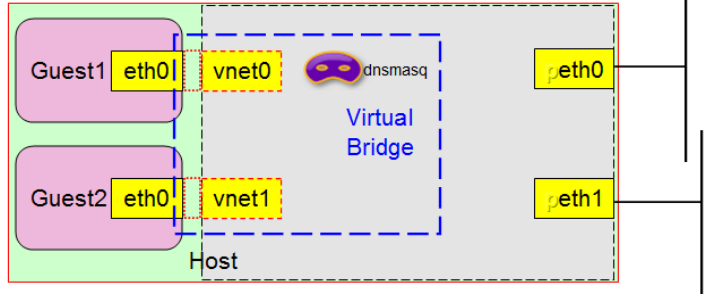

KVM
KVM 全称是 基于内核的虚拟机（Kernel-based Virtual Machine），它是一个内核模块，内核2.6.20后包含在内核中，该内核模块使得Linux变成了一个Hypervisor,
它由 Quramnet 开发，该公司于 2008年被 Red Hat 收购。
它支持 x86 (32 and 64 位), s390, Powerpc 等 CPU。
它是完全开源的。
是x86架构且硬件支持虚拟化技术（如intel VT或AMD-V）的Linux全虚拟化解决方案
需要经过修改的QEMU软件（qemu-kvm），作为虚拟机上层控制和界面
能在不改变linux或windows镜像的情况下同时运行多个虚拟机，
kvm原理
Qemu-KVM:纯软件实现的虚拟化系统,主要用于实现IO虚拟化
qemu-kvm是qemu项目的一个分支，专用于管理kvm，到1.3.0合并到了qemu上
qemu是支持xen和kvm的，但是qemu-kvm是仅仅支持kvm的
虚拟机的每一个cpu[vcpu],使用一个线程模拟
☉依赖于HVM（要求cpu必须支持硬件虚拟化）
Intel：VT-x（表现为vmx）
ADM： ADM-V (表现为svm)
☉内核模块（整体表现为一个内核模块）：
kvm：核心模块
kvm-intel（专用于intel的模块）；kvm-amd（专用于amd的模块）
★KVM模块载入后的系统的运行模式：
内核模式：GuestOS(虚拟机操作系统)执行I/O类操作，或其它的特殊指令的操作；称作“来宾-内核”模式；
用户模式：代表GuestOS请求I/O类操作；
来宾模式：GuestOS的非I/O类操作；事实上，它被称作“来宾-用户”模式；
kvm hypervisor：host上的内核
★kvm组件
/dev/kvm：
工作于hypervisor，在用户空间可通过ioctl()系统调用来完成VM创建、启动等管理功能；它是一个字符设备
功能：创建VM、为VM分配内存、读写VCPU的寄存器、向VCPU注入中断、运行VCPU等等；
☉qemu进程：
工作于用户空间，主要用于实现模拟PC机的IO设备；
KVM和qemu
QEMU:主要提供了以下几个组件：
处理器模拟器：
仿真IO设备
关联模拟设备到真实设备
提供调试器
提供与模拟器交互的接口
VM 运行期间，QEMU会通过KVM模块提供的系统调用进入内核，由KVM负责将虚拟机置于处理的特殊模式运行。当虚机进行 I/O 操作时，KVM 会从上次系统调用出口处返回 QEMU，由 QEMU 来负责解析和模拟这些设备。
除此以外，虚机的配置和创建、虚机运行所依赖的虚拟设备、虚机运行时的用户环境和交互，以及一些虚机的特定技术比如动态迁移，都是 QEMU 自己实现的。
KVM模块按需加载到kernel中，KVM 本身不执行任何设备模拟，需要 QEMU 通过 /dev/kvm 接口设置一个 GUEST OS 的地址空间，向它提供模拟的 I/O 设备，并将它的视频显示映射回宿主机的显示屏
KVM模块加载过程：
1.首先初始化内部的数据结构；
2.做好准备后，KVM 模块检测当前的 CPU，然后打开CPU虚拟化模式开关，并通过执行指令将宿主操作系统置于虚拟化模式的根模式；
3.最后，KVM 模块创建特殊设备文件 /dev/kvm 并等待来自用户空间的指令。
后面需要KVM和QEMU交互完成，两者的通信接口是/dev/kvm的IOCTL调用，
在非根模式下，所有敏感的二进制指令都被CPU捕捉到，CPU在保存现场之后自动切换到根模式，由 KVM 决定如何处理。
CPU 中的内存管理单元MMU是通过页表的形式将程序运行的虚拟地址转换成实际物理地址。在虚拟机模式下，MMU 的页表则必须在一次查询的时候完成两次地址转换。因为除了将客户机程序的虚拟地址转换了客户机的物理地址外，还要将客户机物理地址转化成真实物理地址。
网络虚拟化模型
1）bridge 桥接
把物理机上的网卡当作交换机，
在桥接方式下，模拟一个虚拟的网卡给客户系统，主系统对于客户系统来说相当于是一个桥接器。客户系统好像是有自己的网卡一样，自己直接连上网络，也就是说客户系统对于外部直接可见。
2）route 路由
相当于虚拟机连接到一台路由器上，由路由器(物理网卡),统一转发，但是不会改变源地址。
该模式网桥要作为路由器对虚拟机地址进行转发，路由模式是无法修改源地址ip，因此虚拟机可能会成功的将报文发送给目标地址ip，而目标地址ip无法将报文回传给源地址ip
3）NAT
源地址转换为路由器(物理网卡)地址，但是其他主机的报文无法到达虚拟机，在docker环境中经常被使用。

4）isolation 隔离
各虚拟机虚拟网卡连在虚拟交换机上，虚拟机之间能互相通信，但虚拟机与主机和internet不能通信

VirtIO
KVM是一个混合类型的VMM，它能够以模拟方式支持硬件的完全虚拟化，也能够在GuestOS中安装驱动程序进而支持部分硬件的半虚拟化对网络设备和块设备来讲，半虚拟化方式能够极大地提升设备性能
KVM 功能与特性：
支持CPU 和 memory 超分（Overcommit）
支持半虚拟化I/O （virtio）
支持热插拔 （cpu，块设备、网络设备等）
支持对称多处理（Symmetric Multi-Processing，缩写为 SMP ）
支持实时迁移（Live Migration）
支持 PCI 设备直接分配和 单根I/O 虚拟化 （SR-IOV）
支持 内核同页合并 （KSM ）
支持 NUMA （Non-Uniform Memory Access，非一致存储访问结构 ）
KVM 工具集合
libvirt：操作和管理KVM虚机的虚拟化 API，使用 C 语言编写，可以由 Python,Ruby, Perl, PHP, Java 等语言调用。可以操作包括 KVM，vmware，XEN，Hyper-v, LXC等Hypervisor。
kvm的管理工具栈：
qemu：
qemu-kvm
qemu-img
qemu-io
在Guest上运行qumu进程
基于libvirt API管理工具主要有VMM和virsh：
GUI：
virt-manager：通过libvirt管理虚拟机的图形化工具，
virtinst：构建及安装虚拟的工具组件，包括virt-install（创建及安装虚拟机）、virt-clone（虚 拟机克隆）、virt-convert（虚拟机格式转换）和virt-image（基于xml格式的镜像描述文件创 建虚拟机）等；
virt-viewer：连接虚拟机的图形化客户端；
CLI：virsh, virt-install
virsh：管理虚拟机的交互式shell，可用于创建、暂停、停止域等，也可实现虚拟 设备的管理，是用于管理VKM虚拟机的最常用工具之一
libvirt远程管理虚拟机
要用libvirt连接到超级管理程序，我们需要一个URI，这个URI配合virsh和virt-viewer命令使用，后面可以跟一些可选项，virt-viewer可以调用一些链接参数，
例如：virsh -c qemu:///system
当链接到远程机器时，可以定义几种使用的协议：ssh，tcp，tls。
当链接到远程机器时，需要使用远程主机的用户和主机名进行链接，如果没有定义链接用户，则会使用本机环境的$USER的用户进行链接，
当连接到qemu hypervisor时，接受两种链接类型：system可以有所有的访问权限，session有限制的访问。
例如：
使用full access链接至本机的qemuhypervisor，前面的-c是为了执行后面的list命令(--connect)
virsh -c qemu:///system list
使用full access链接至远程主机的qemu hypervisor，每次都要输入ssh密码，改成ssh无密码登陆就不需要输入密码了，直接显示结果。
virsh -c qemu+ssh://tux@mercur/system 直接进入交互virsh模式
virsh -c qemu+ssh://10.1.1.8/system list 直接显示list后的结果
其余连接格式如下：
qemu:///session (local access to per-user instance)
qemu+unix:///session (local access to per-user instance)
qemu:///system (local access to system instance)
qemu+unix:///system (local access to system instance)
qemu://example.com/system (remote access, TLS/x509)
qemu+tcp://example.com/system (remote access, SASl/Kerberos)
qemu+ssh:///system (remote access, SSH tunnelled)
实时迁移
实时迁移的需求：
•GuestOS映像文件放轩在共享存储上，如iSCSI、NFS或GFS2等； •目标物理主机的KVM要能够兼容源物理主机的KVM及其准备迁移的GuestOS； •在两台主机上，共享存储必须挂载在同一位置，且挂载的目录名必须一致； •两台物理主机的CPU需要具有相同类型的特性； •虚拟机没使用透传I/O； •两台物理主机的时间要同步； •两台物理主机必须有一致的网络配置，且所有桥接和网络配置必须完全一致
https://docs.openstack.org/install-guide/_image/openstack-arch-kilo-logical-v1.png